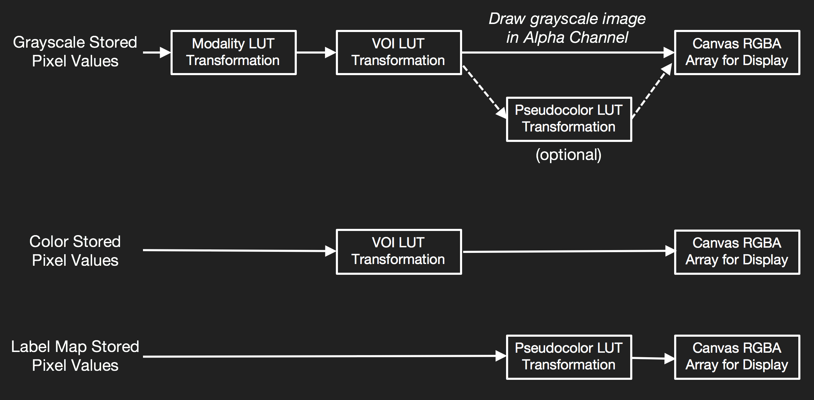

Rendering Pipeline 渲染流程
Cornerstone will select from multiple image rendering pipelines depending on the Image (e.g.grayscale, color, label map, viewport pseudocolor) type.
Cornerstone将会根据不同的图片类型（如灰度图grayscale, color, label map, viewport pseudocolor, 选择进入不同的图片渲染流程管道。
Rendering Pipeline Workflow

| 渲染路线 | 描述 |
|---|---|
| renderGrayscaleImage | 针对灰度图（比如比较常见的CT扫描出来的DICOM图片）默认的渲染管道。可以对Modality and VOI LUT进行变换。 |
| renderPseudoColorImage | 当设置Viewport一个colormap的属性时使用。它将在MODIANLUT和VOILUT转换之后，对像素数据应用伪彩色PseudoColor LUT转换。 |
| renderColorImage | 针对彩色color图片的管道通道。所有像素的α通道设置为不透明，除非人为将rgba设置成true. |
| renderWebImage | 针对那些从web获取的普通图片像（PNG, JPEG）。如果不需要做VOI LUT 转换（如窗宽窗位，反转），则canvas可以直接从Image的getImage()函数里绘制 |
| renderLabelMapImage | 针对 label maps的渲染管道。直接对stored pixel data应用伪彩pseudocolor LUT 转换。并且不应用Modality or VOI LUT 转换。 |